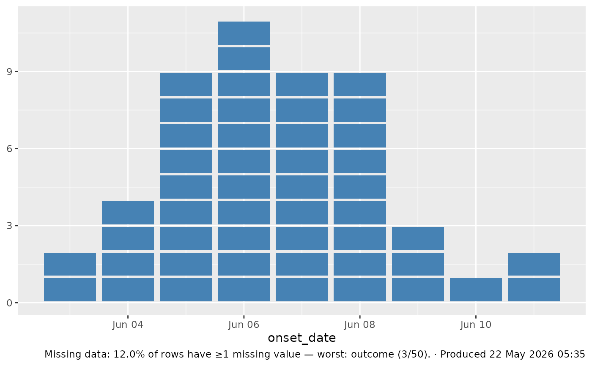

Convenience helper that builds a caption summarising the missing-data
status of an epidemic curve and the time the chart was produced. Add the
result to a ggplot with +, e.g.
Usage
epicurve_footnote(
data,
columns = NULL,
show_missing = TRUE,
show_timestamp = TRUE,
timestamp_format = "%d %B %Y %H:%M",
extra = NULL,
...
)Arguments
- data
A data frame, typically the same one used to build the plot.
- columns
Optional character vector of columns to consider when summarising missingness. Defaults to all non-ID columns in
data.- show_missing
Logical. Whether to include a missing-data summary (default
TRUE).- show_timestamp
Logical. Whether to include a "produced at" stamp (default
TRUE).- timestamp_format
A
format()template used for the timestamp (default"\%d \%B \%Y \%H:\%M").- extra
Optional character string appended verbatim to the caption.
- ...
Additional arguments passed to
ggplot2::labs().
Value
A ggplot2::labs() object suitable for adding to a ggplot.
Details
ggplot(cases, aes(x = onset_date)) +
geom_epicurve() +
epicurve_footnote(cases)By default the footnote reports the proportion of rows with at least one
missing value across the supplied columns (or all columns when
columns = NULL) and stamps the chart with the current time. The text
can be customised or extended via extra.
Examples
library(ggplot2)
cases <- simulate_outbreak(n = 50, seed = 1)
ggplot(cases, aes(x = onset_date)) +
geom_epicurve(fill = "steelblue") +
epicurve_footnote(cases)
